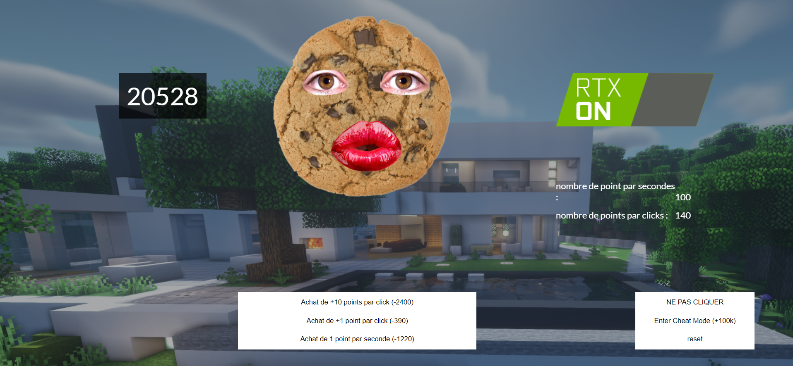
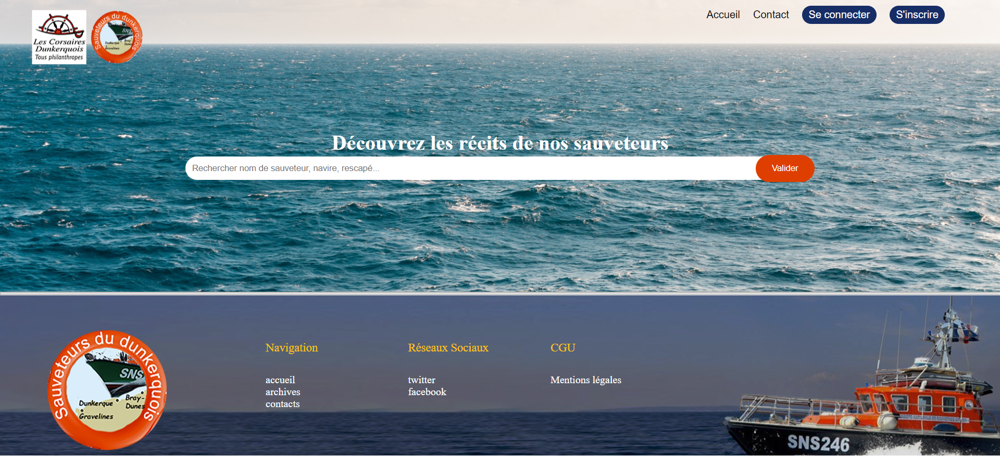
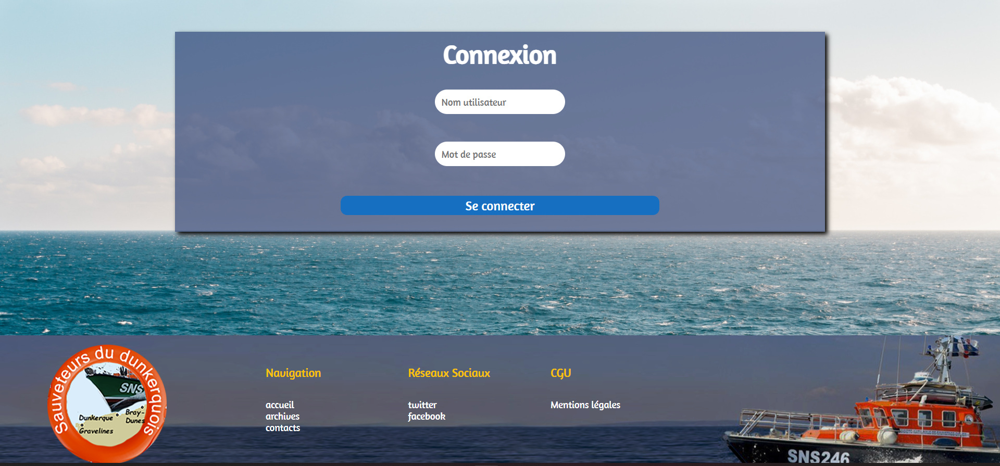

Création de site
Site internet et jeu

Ce projet que j'ai rélaisé en groupe avait pour objectif de créer un jeu "cookie clicker" fonctionnel. Nous avons choisis un interface simple et un aspect amusant.
Une des différentes consignes du site était d'ajouter un bouton permettant de modifier l'aspect de la page. Notre groupe a décidé d'incorporer un bouton "RTX" afin d'améliorer, d'un point de vue humoristique, le visuel du jeu.
Cette page internet provient d'un projet réalisé lors de la Nuit de l'info. Cet événement propose à des écoles de se lancer dans un projet s'étendant sur une nuit. Lors de cette édition, il nous avait été demandé de réaliser un site internet et une base de données pour les sauveurs du dunkerquois.
Nous avons dû travailler ensemble afin de réaliser ce projet dans le temps imparti.